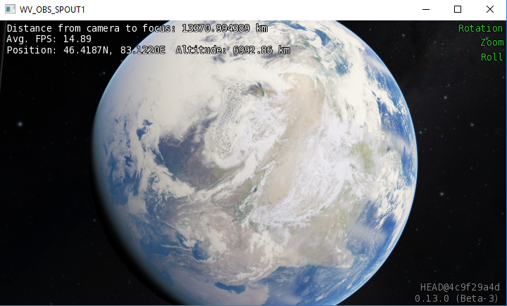
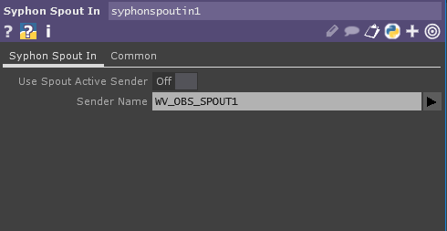

OpenSpace
Open Space is a multi-scale astrovisualization engine that aims to capture the entire observable universe. Visit the OpenSpace Project page for more details. Our goal is to bring OpenSpace visuals into TouchDesigner, so we can leverage these visuals in our own projects.

OpenSpace Spout output
First download and install OpenSpace for your platform - windows, mac, and linux executables are available from their project page.
Note
These instructions assume OpenSpace version 0.13.0
To bring OpenSpace visuals into Touch Designer, we will use the Spout interface.
After installation, edit openspace.cfg from the top-level directory.
SGCTConfig = sgct.config.single{720, 405, shared=true, name="WV_OBS_SPOUT1"}
This resolution falls under the max resolution available to the free version of Touch Designer.
Open TouchDesigner and add a Syphon Spout In node, using the same name we used before, WV_OBS_SPOUT1:

Useful OpenSpace commands
Type the backtick ` to open the OpenSpace console. You can then enter any of the following lua commands.
To remove some of the information text on the screen:
openspace.dashboard.clearDashboardItems();
To point the camera back to it's original target:
openspace.navigation.resetCameraDirection();
To record a session:
openspace.sessionRecording.startRecording("record_test");
After this, any changes you make to the camera or scene will be stored in the record_test file. When you are finished, stop the recording with:
openspace.sessionRecording.stopRecording();
To play back a recording:
openspace.sessionRecording.startPlayback("record_test");